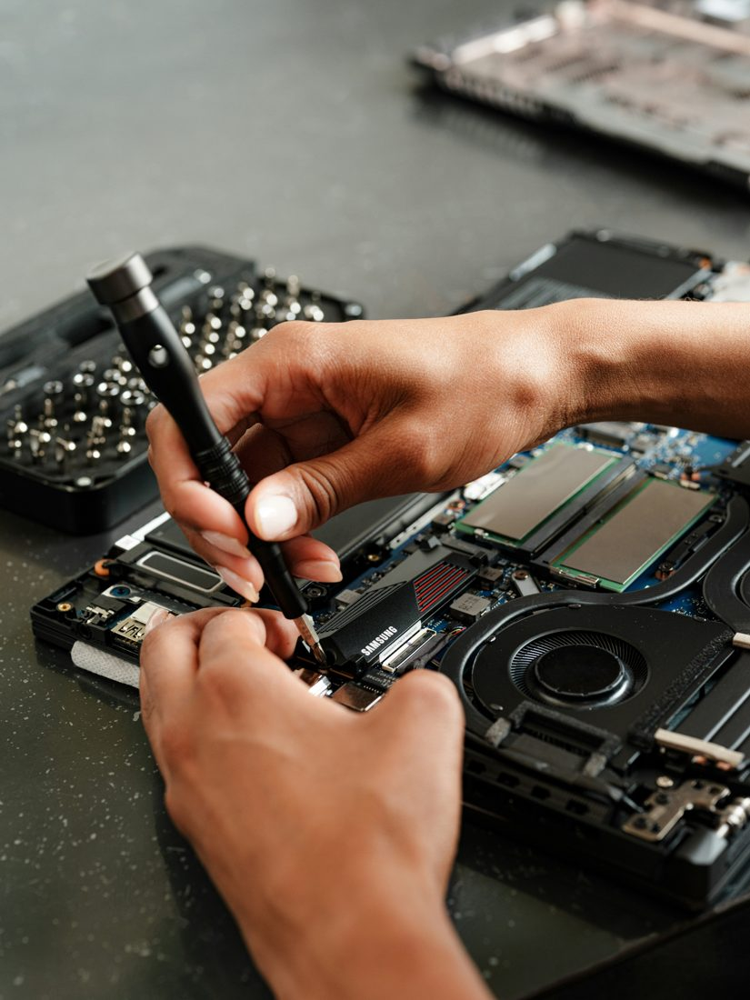
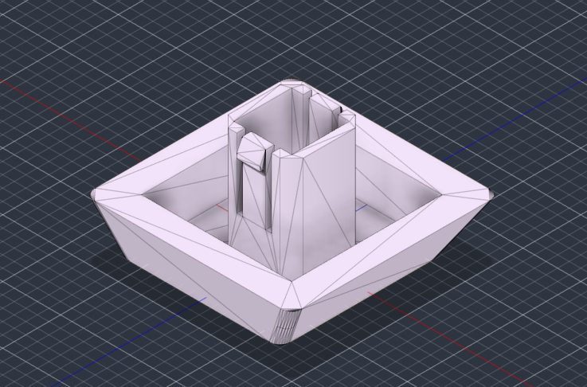
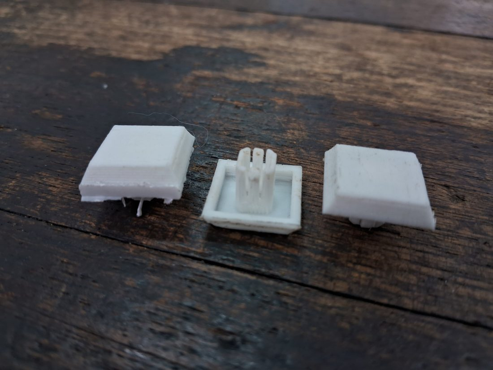

Informática y hardware
- Armado y desarmado de computadoras
- Mantenimiento preventivo y correctivo
- Diagnóstico de fallas
- Reconocimiento de componentes
- Instalación de sistemas operativos
- Configuración de Windows
Estudiante de formación técnica · EEST N.º 2 de Lanús
Explorando la tecnología, diseñando soluciones y construyendo conocimiento.
Me oriento a la informática, el hardware, las redes y el diseño 3D, y busco aplicar lo que aprendo en proyectos reales.
Estudiante de 7.º año de la Escuela de Educación Secundaria Técnica N.º 2 de Lanús, con formación e interés en informática, hardware, redes informáticas y diseño 3D.
A lo largo de mi formación he adquirido conocimientos en mantenimiento y diagnóstico de equipos informáticos, armado y desarmado de computadoras, instalación y configuración de sistemas operativos, identificación de fallas y reconocimiento de componentes de hardware.
También cuento con conocimientos en redes informáticas, incluyendo direccionamiento IP, configuración de routers, cableado estructurado y diseño de topologías de red.
En diseño y fabricación digital trabajo con Autodesk Fusion 360 para el modelado y diseño 3D, además de manejar impresoras 3D Creality.
Complemento mi formación con herramientas de diseño gráfico, recursos digitales y Microsoft Office.
Mi objetivo es seguir desarrollándome en el ámbito tecnológico, sumar experiencias y participar en proyectos donde pueda aplicar mis conocimientos y seguir aprendiendo.
Organizadas por área, sin porcentajes: cada punto es algo que trabajé durante mi formación.



7.º año · Formación técnica en curso
Áreas de trabajo: informática y hardware, redes informáticas, y diseño y fabricación digital.
Si querés proponerme un proyecto, una práctica o simplemente charlar sobre tecnología, escribime.